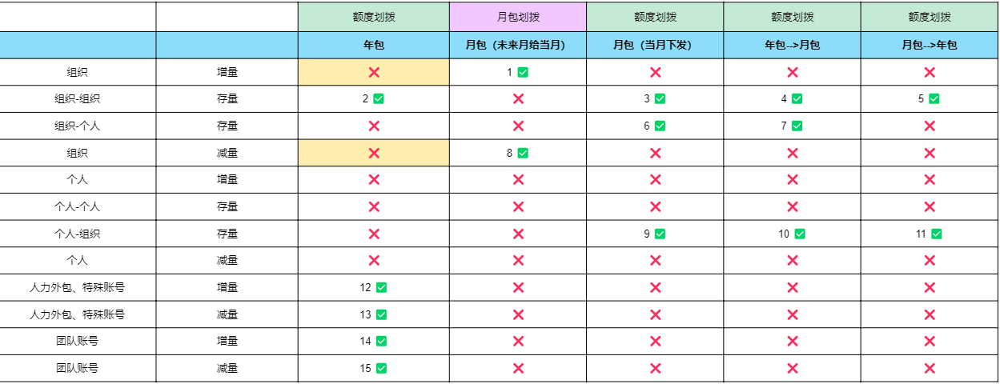

本周产出 4 项知识资产（活水规则 / 团队账单 FAQ / 测试环境功能优化 / 操作记录展示矩阵），并交付一个网页指引；另处理答疑 11 个、需求 9 条、权限配置 3 项（以上仅含直接对接部分）。
本周 5 份知识资产 + 1 个交互式指引站，按时间线列出。点击每条标题可展开 4 步详情。

本周新收集 9 条系统优化需求，均已录入需求清单。延续上周"收集只做了一半、要走到推动解决"的思路，本周对每条需求都跟进到状态归位——已排期 / 正在做方案 / 待评估分层清晰。
| 需求 | 来源 | 类型 | 状态 |
|---|---|---|---|
| 团队账单增加初始下发和调额字段 | olivaxu | 账单/明细 | 预计 8 月前上线 |
| 导出调额记录功能 | olivaxu | 账单/明细 | 正在做方案 |
| 组长一键向上级申请额度按钮 | brendahu / robinhnli | 额度管理 | 已记录 |
| 审批提示增加 HR 名字 | guanlaili | 界面交互 | 待商讨方案 |
| 导出权限表格增加组织全路径 | jiawenshou | 权限/审批 | 已反馈 |
| 免审批值支持随时开关 | fayeliu | 额度管理 | 已记录 |
| 员工界面不显示审批人 | fayeliu | 界面交互 | 需评估 |
| 团队账号列表增加创建者字段 | zimoding | 账单/明细 | 已记录 |
| 产品名称支持二次编辑 | zimoding | 界面交互 | 已记录 |
本周已把指引网站的框架做出来了，下周把它填满、推出去、真正到达 BP——从"做出来"走到"用起来"。